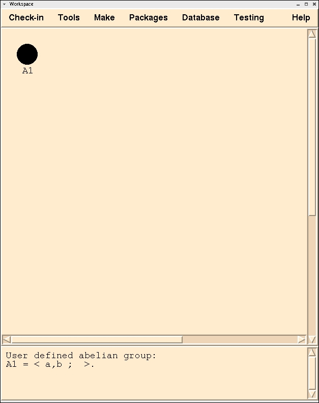

Magnus
A System for Exploring Infinite Groups
[prev]
[home]
[next]
An Example Session
Selecting the group
As you can see clicking on the icon (the round white circle) to select
the
group also changes the icon (to a round black circle) to indicate
that the
group is "selected". While it is not yet apparent Magnus
has updated the menus.
The Tools menu now contains all of the tools
(procedures) you can apply to the selected group.

[prev]
[home]
[next]